Ongoing
Vera — AI Receptionist
A self-hosted Turkish AI receptionist. Voice-driven record-and-respond system.
Tech enthusiast and business analyst — a camera in one hand, a passport in the other. Scroll for the highlights.
Hi, I'm Yasmin — I build, analyse, and explore.
I studied IT Management for Business at Manchester, graduating in 2025.
Then a placement year as a Business Analyst in London.
Next up: an MSc in Business Analytics at UCL.
Along the way I've travelled 26 countries and skied 9 resorts.
I build things - an AI receptionist and a mobile shop.
And I give back — teaching in Nepal, charity and community work.
A quick tour →
I'm Yasmin, a tech enthusiast who grew up between Istanbul and the UK with entrepreneur parents. I studied Information Technology Management for Business at the University of Manchester, spent a placement year as a business analyst in London, and I'm heading to UCL for an MSc in Business Analytics. Along the way I've been lucky enough to travel, ski, and eat my way across 26 countries. Here's where life has taken me so far.
Where it started
Born and raised — I earned my International Baccalaureate Diploma at Terakki Foundation Schools, where I led and took part in a range of volunteer projects.
University of Manchester
Starting my BSc in Information Technology Management for Business.
Placement year
A year in the city as a Junior Business Analyst at Howard Kennedy LLP.
Final year · University of Manchester
Back at UoM to finish my BSc Information Technology Management for Business.
Home again
Back where it began, between projects and travels.
MSc Business Analytics · UCL
Starting my master's at UCL, while exploring part-time roles alongside my studies.
University College London (UCL)
Postgraduate study in business analytics, starting September 2026.
Howard Kennedy LLP · London
Worked with stakeholders across the firm to analyse and improve business processes, built business cases, and kept IT deliverables aligned with business needs in a legal environment.
University of Manchester
Led campus tours, wrote blog posts about student life, and supported prospective students with their questions about the university.
Şişecam · Istanbul
Analysed global factory-output data to support product and brand management, and presented a proposal on ATP software with a market analysis of the US glass market.
Chip Computer Ltd. · Istanbul
Provided technical support and IT solutions to clients while advising on software development and marketing strategies, and translated documents from English to Turkish to help resolve software issues.
Cordamed Biomedical
Supported the Marketing and Administrative department, developing strategies to improve long-term client retention and loyalty.
University of Manchester
2nd place in the ITMB Final Showcase for a group project building an app for wealth managers at Credit Suisse.
A self-hosted Turkish AI receptionist. Voice-driven record-and-respond system.
The site you're on, built with a mix of hard coding and AI using plain HTML, CSS and JavaScript (no framework). It has an interactive globe of my travels, a kinetic scroll-revealed feed, and a light/dark theme. Probably a forever ongoing project.
A cross-platform retail app built in Xamarin.Forms (C#/.NET): a full storefront with home, category pages (clothing, beauty, furniture, home décor), product listings and a shopping basket. University project, BMAN11000.
Right now the product list is written straight into the app. To make it ready for real use, I'd split it into three parts:
Then the catalogue and basket come from the database instead of being fixed in the code, so items can be added or updated without changing the app itself.
A mobile app concept for Credit Suisse relationship managers — a secure client dashboard with RM login and Face ID, designed to be a wealth manager's everyday companion. My ITMB final-year group project, which placed 2nd in the ITMB Final Showcase.
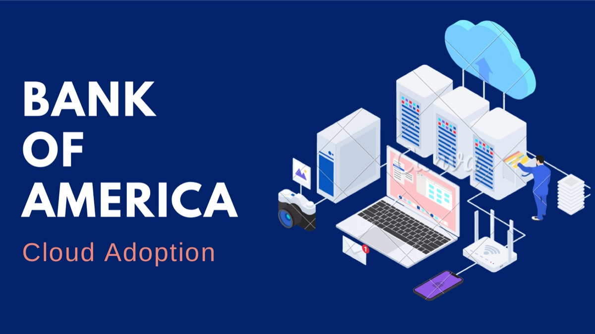
A cloud-adoption business case for Bank of America — making the strategic and financial argument for moving core services to the cloud, with the trade-offs, risks and expected return laid out for decision-makers.
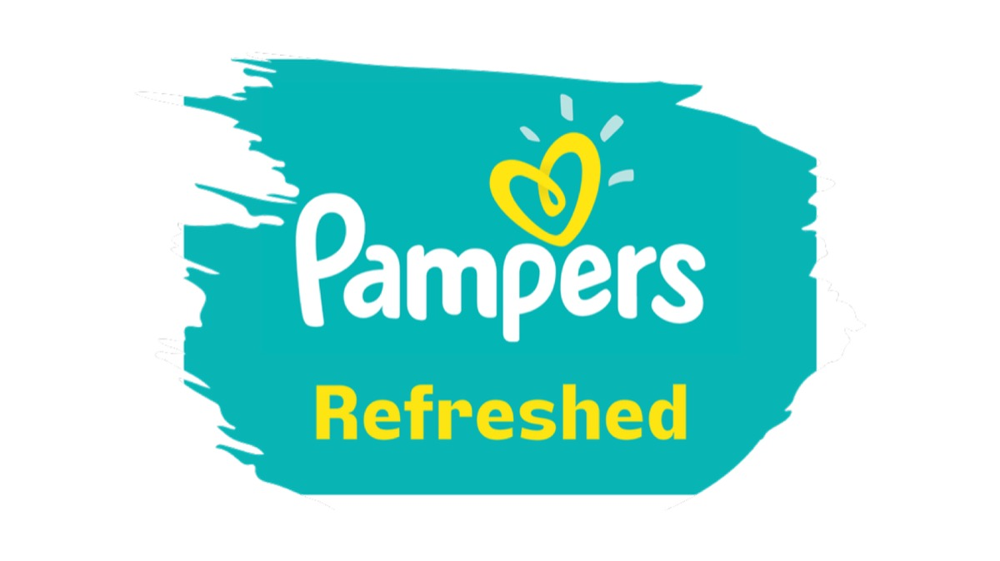
A brand and marketing project for P&G's Pampers, delivered through the P&G Touchpoint programme — audience insight, positioning and a go-to-market pitch for the brand.
A strategy and innovation pitch for Ford — reading where the market is heading and recommending how the business should respond, presented as a full deck.
More than a hobby.
City lights scale with population · drag to spin · dashed lines are flights
The toolkit I bring to a problem.
Giving back has been a constant — the work I'm proudest of.
Volunteer · Manchester
Volunteering at the historic Grade II* listed Victoria Baths — helping restore and clean the property to get it ready for open days and events at one of Manchester's best-loved landmarks.
Listening volunteer
Trained in active listening and staffed confidential 12-hour shifts, offering a calm, non-judgemental ear for students who needed someone to talk to.
Charity shop volunteer · Manchester
Customer-facing shop assistance and online listing of donations. Helped raise £1,500 as a group, and used marketing skills to run promotion across the University's and the BHF's social media.
Leader
Led a team producing a video to teach younger children about feminism — putting together the idea, scenario and technical crews.
Project leader · Turkish Information Industry Association
Partnered with a company to collect electronic waste at school and raise awareness of its environmental impact — gave presentations to classes and set up e-waste bins around the school.
Project leader
Supported education in rural areas of Istanbul — visited a school, discussed its needs with the principal, and funded it through money the team raised.
Organiser
Ran a healthier-snack fundraiser at school to fund the SupportED project, selling cooked meals and managing each team's earnings and shifts.
Nagarkot, Nepal
Travelled to Nagarkot to teach English and Maths to underprivileged children — helped plan the curriculum in advance and collected donations to bring along.
Longer-form work — academic and personal.
A Grounded Theory Analysis of Energy Demand in Open- and Closed-Source Large Language Models
My final-year dissertation at Alliance Manchester Business School (ITMB). Using constructivist grounded theory, it examines how the design and deployment of open-source models (LLaMA, DeepSeek) versus closed-source models (ChatGPT, Claude) shape their energy demand and environmental impact — and what transparency, standardisation, and governance can do about it.
BMAN24621 · University of Manchester
An end-to-end analysis of the World Happiness dataset — exploring what drives national happiness and building models to explain and predict it. I fitted linear regression and decision-tree models, compared them against each other on fit and interpretability, and translated the findings into policy implications for governments. Graded 75/100.
Strategic management essay · University of Manchester
Using Teece's dynamic-capabilities framework, this essay argues that Texas Instruments' 1985–1996 turnaround was driven by CEO Jerry Junkins' shift to a decentralised structure — countering cognitive inertia, enabling contextual ambidexterity, and reshaping the firm's identity — as its share price climbed from roughly $1 to $9.
Strategic management essay · University of Manchester
A dynamic-capabilities analysis of why Microsoft's sensing capability faltered in the 2000s and early 2010s: the bounded rationality of its top team and an entrenched "Windows is god" dominant logic filtered out mobile opportunities. It recommends a larger, more diverse top team and structural differentiation to reframe threats as opportunities.
University of Manchester — Humanities Blog
A guest post for the University of Manchester on arriving from Turkey as an international ITMB student during the pandemic, and how the student community, societies, and support turned a new city into a sense of belonging.
Personal bests, tracked with Slopes on Apple Watch.
* clocked back when I was young and stupid.
Home resorts: Val Gardena · Zermatt · Mayrhofen · Bansko · Chamonix · Dorukkaya · Kitzbühel · Cortina · Kayseri · Erzurum · Uludağ · Brașov.
Scroll through some moments from my trips.
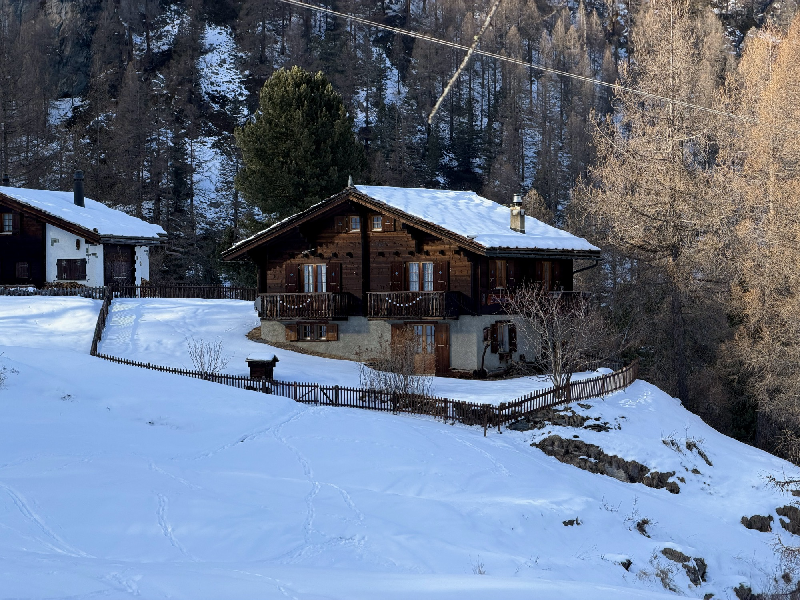
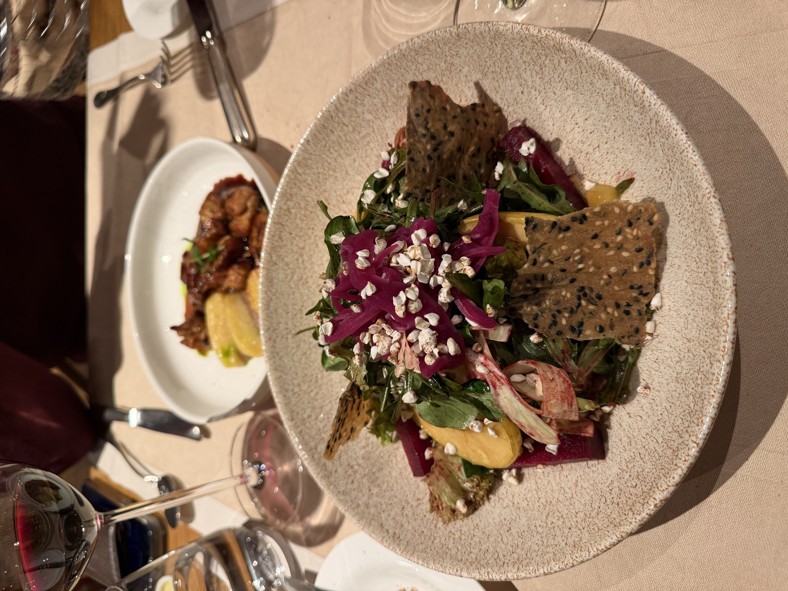
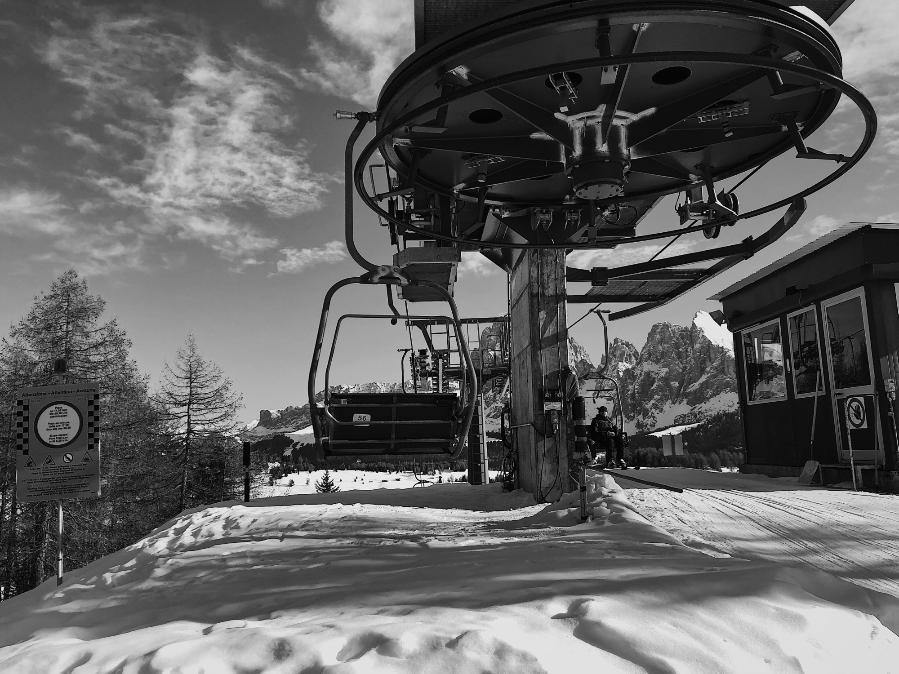
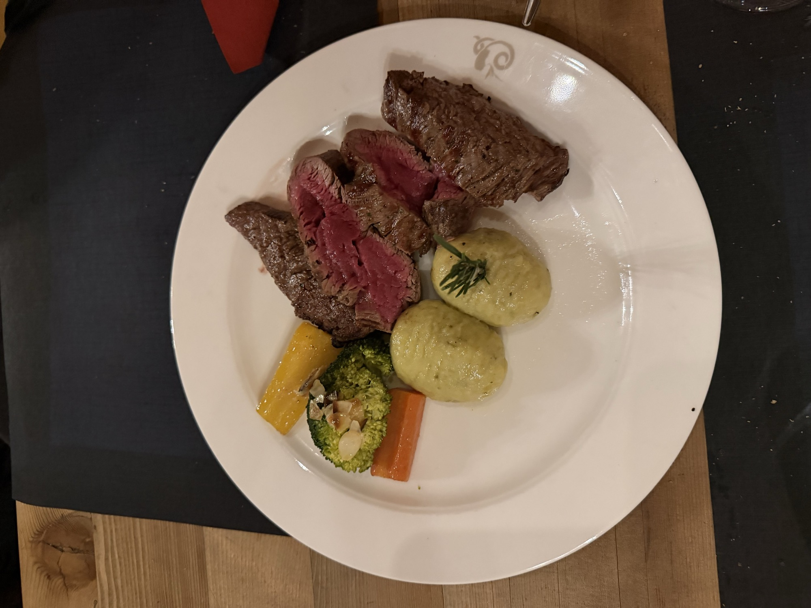
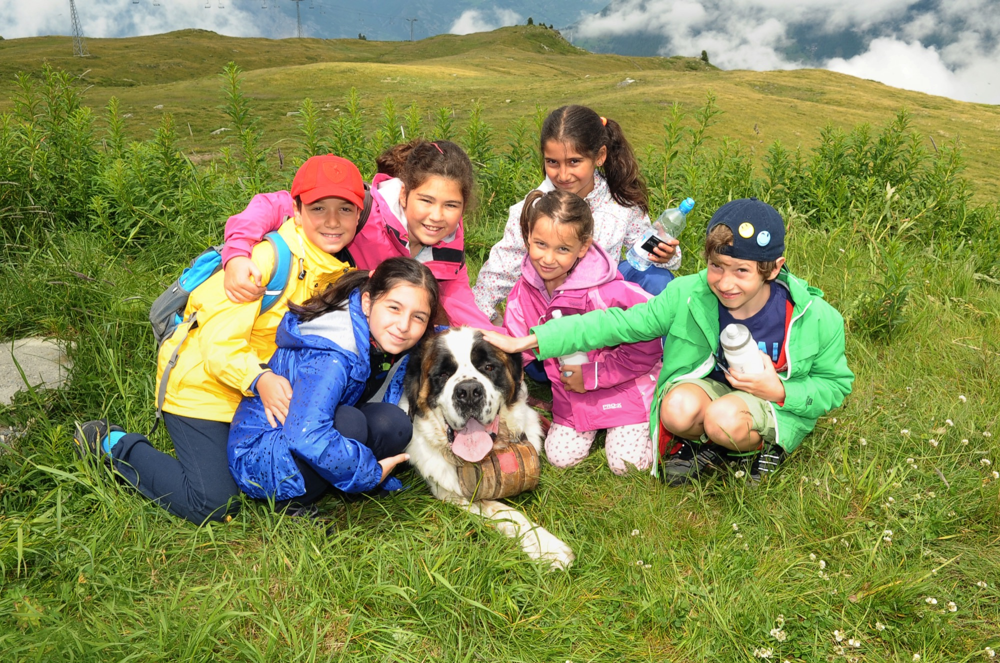
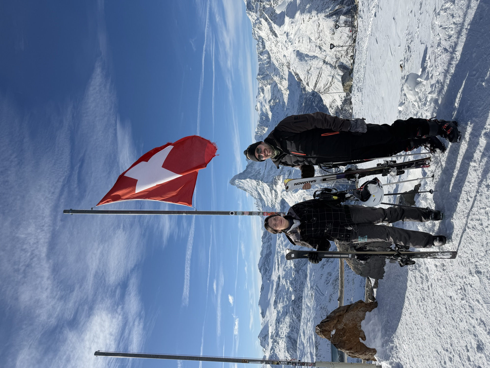
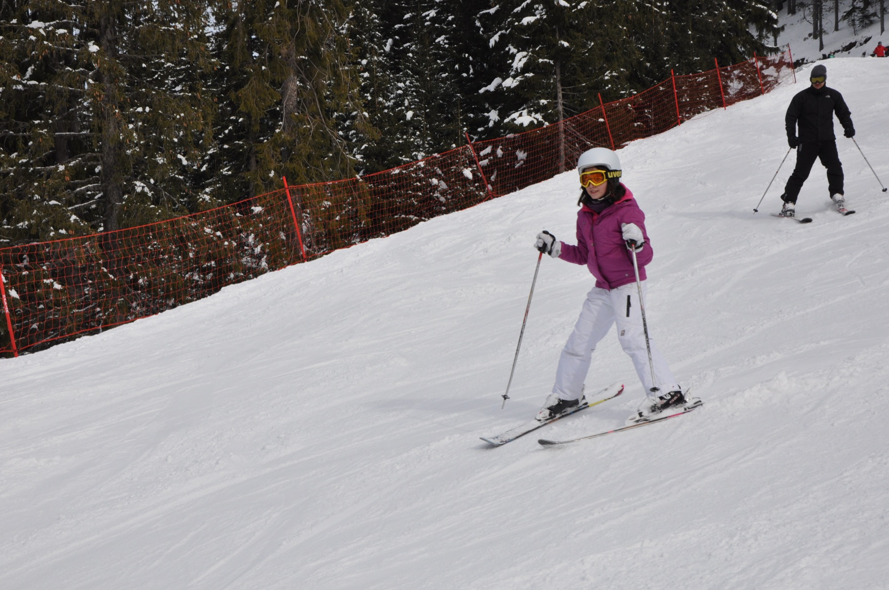
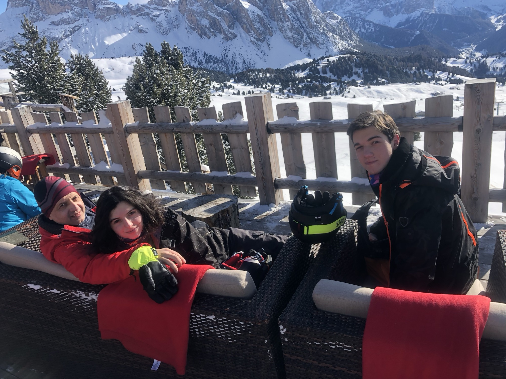
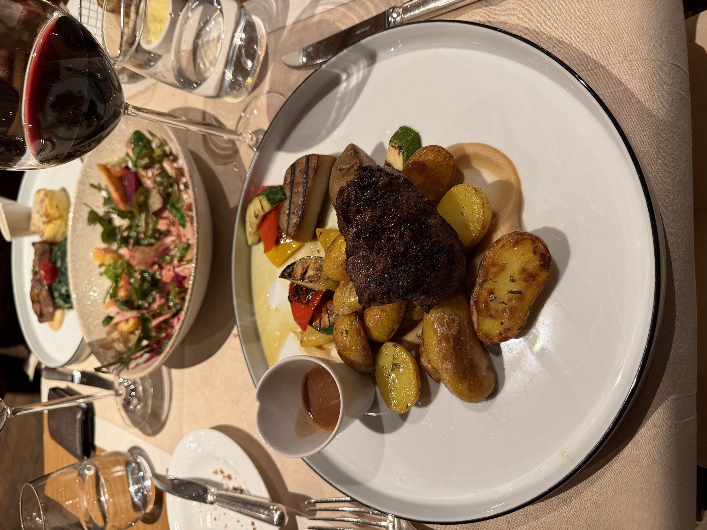
Life outside the work.
Not with a camera in hand — just my phone, doing my best to catch the landscapes and moments I pass along the way.
I love to make food as much as I love to eat it, and I'll try anything new wherever I go. A little taste of it here.
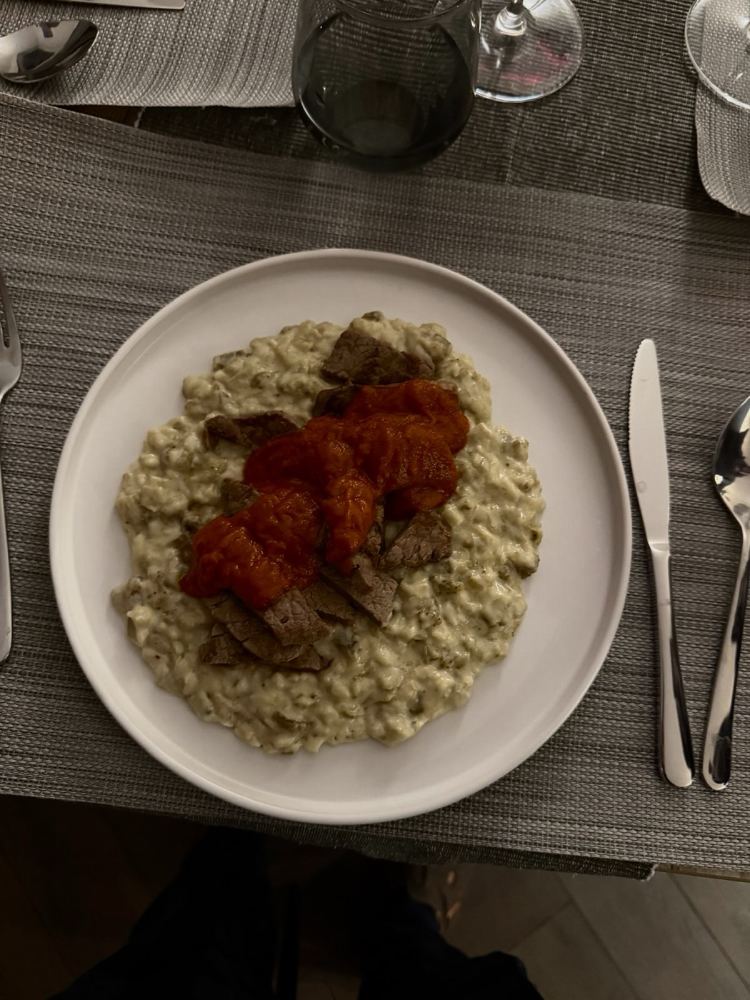
Chasing snow across the Alps and beyond, from Val Gardena and Zermatt to Verbier, Bansko and the slopes of Türkiye.
Picked up padel in 2023 and I've been hooked ever since, from courts right by the sea in Bodrum to games back home.
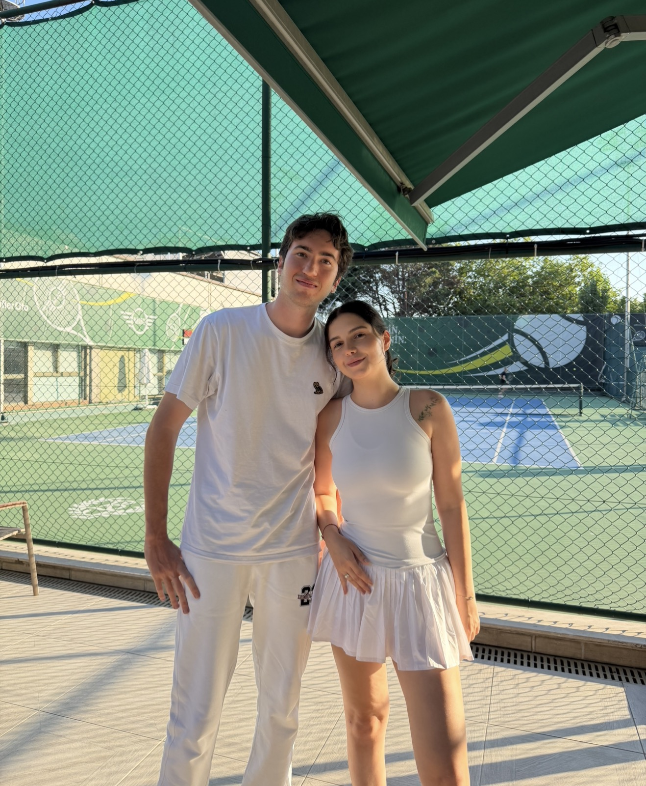
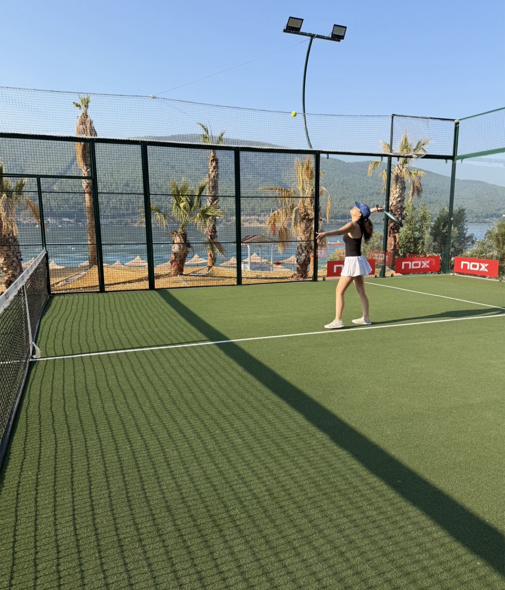
The "Jasmine" necklace and its matching ring are my own design — gold jasmine flowers set with emeralds — worked on over the past year.
The style grew out of a trip to Baku to study Zaha Hadid's architecture, her flowing "S" forms, alongside eastern traditions and ornament, which I translated into the curves and detailing of the pieces.
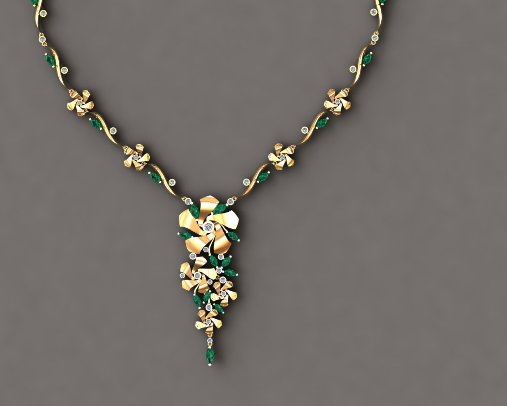
Six years of weekly artistic ceramics in the studio of Tuba Önder Demircioğlu, a national artist and member of the UKKSA consultative committee.
References available on request.
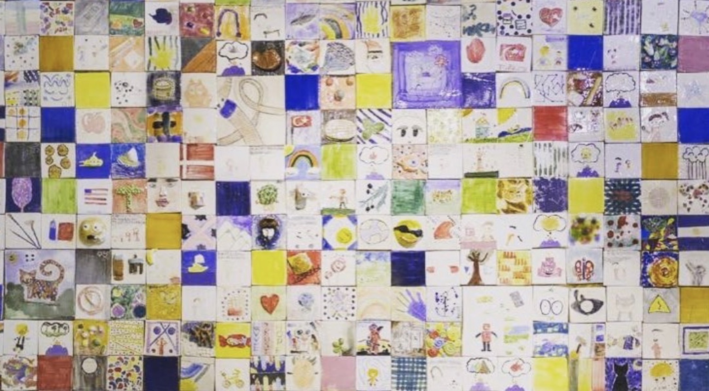
Open to opportunities and collaborations.